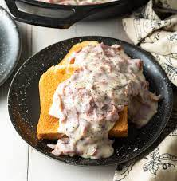

The legendary: Shit on a Shingle! A retro war-time favorite... well, it was dad's favorite at the very least, since it's easy and cheap to make and gets the job done when your belly is aching for something hearty.